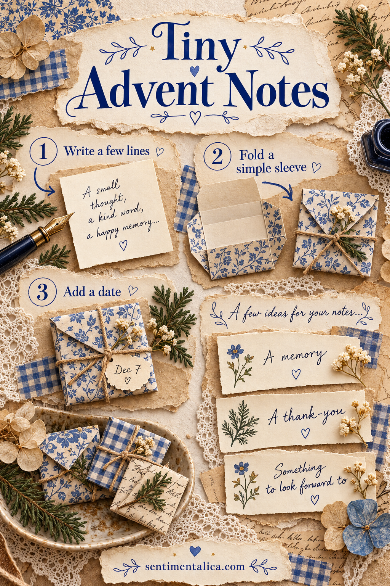
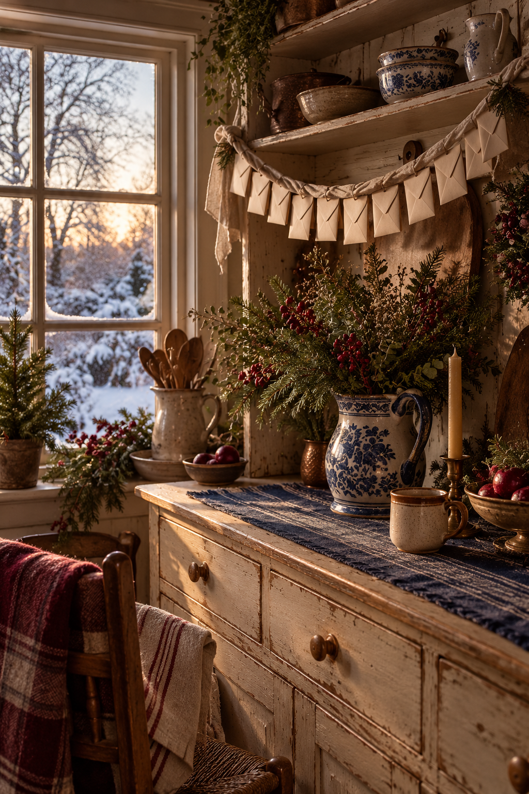

An Advent note can be a memory, a thank-you, or a small invitation tucked where someone will find it. It does not need a gift inside. If the idea of filling a whole calendar feels like another December task, make a smaller collection and let the notes arrive at a pace that suits your relationship.
Choose a rhythm you can enjoy
Decide who the notes are for and how they will reach them. A partner at home might find one beside their breakfast cup. A friend away from you could receive a bundle to open through December. You might make twelve notes, a handful for weekends, or just enough for the week before Christmas. Decide the rhythm before you start decorating.
Keep expectations gentle. An Advent note should not require a reply, a photograph, or proof that the recipient completed something. If they are busy or having a difficult month, write a small introduction: “Open these whenever you would like a little company. There is nothing to catch up on.” That sentence sets the feeling for the whole project.
Write from what you already know about them
On a spare sheet, collect a few memories, things you appreciate, and ordinary pleasures they enjoy. These are your raw materials. Specificity helps: the tea they always choose, the song they play while cooking, the way they remember to ask about your appointment. A tiny note feels full when it contains a detail the right person will recognise.

Try a memory such as “I still think about our walk home when every window had fairy lights.” A thank-you might read “Thank you for making room at your table when my week went sideways.” For a wish, keep it close to real life: “I hope you get an unhurried breakfast this weekend.” Borrow the shape of these sentences, then replace the details with your own.
An invitation can be equally small: “If you feel like it, let’s choose one old Christmas song over tea.” Leave room for a no or a different day. Avoid turning every slip into a task. Notes that simply say something kind can be opened and enjoyed in a tired moment.
Fold sleeves around the notes you have
Cut plain writing slips to a size that feels comfortable to hold. Fold a scrap of decorative paper around one slip, leaving a little clearance so it slides out easily. Crease the bottom upward, fold the sides inward with a small overlap, and glue the overlapping edges. Keep the top open while the adhesive dries.
Make one sleeve first and test it before cutting the rest. If the paper is very thin, use it as a narrow decorative band around a plain folded note instead. You do not need identical envelopes. Repeating one colour or one size will give the bundle enough connection.

Number only if the order matters
If a note refers to a particular day together, mark its sleeve clearly. Otherwise, use names or little titles such as “For a tired afternoon” and “A thing I appreciate.” An unnumbered bundle lets the recipient choose freely and prevents a missed date from feeling like unfinished homework.
Read every note before sealing anything. Remove a joke that needs explanation or a promise you may not be able to keep. Sign your name on the last slip, or on every note if the bundle will travel. Tie the sleeves loosely or place them in a small box with the opening note on top.
The finished collection can stay modest. Its value is the repeated moment of being remembered, carried by words that could only have come from you.